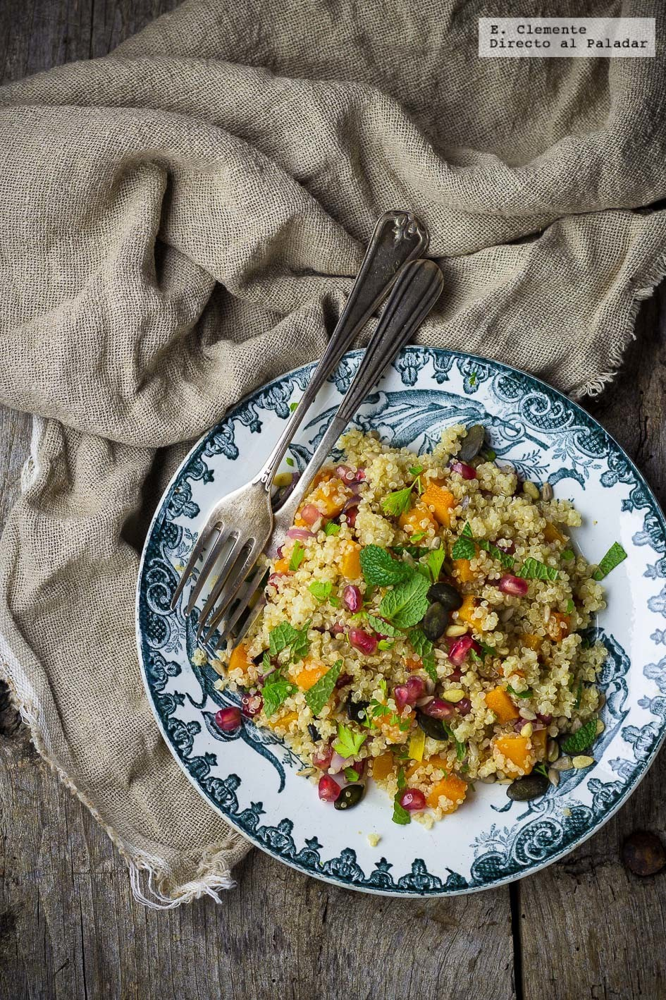
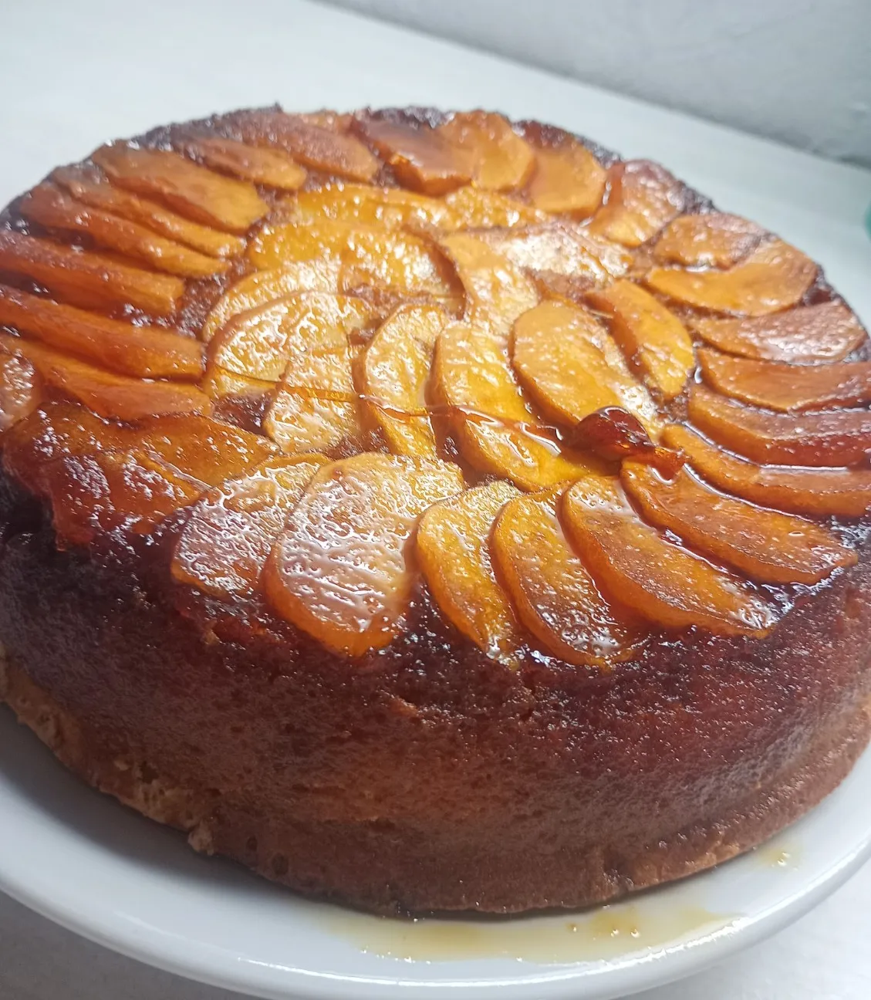

Guisados
guiso de lentejas tradicional :
El guiso de lentejas tiene un origen españo. Dicho plato, por cierto es rico, barato y muy abundante, comenzó a hacerse entre el Siglo XIX y XX.
Ingredientes :
°200 gr. de lentejas pardinas .
°120 gr. de chorizo fresco .
°1 zanahoria
1 cebolla mediana .
°2 dientes de ajo .
°Aceite de oliva o Aceite de girasol .
°Pimentón y especias a gusto .
°1 litro de agua .
°1 hoja de laurel .
°Sal a gusto
Preparacion :
°Dejar las lentejas en remojo.
°Picar los ajos, que queden chiquitos, y luego verterlos en la cacerola .
°Picar la cebolla.
°Pelar la zanahoria y luego cortarla para que queden pedacitos pequeños.
°Poner una cacerola en la ornalla, a fuego medio.
°Poner aceite en la cacerola.
°Dentro de la cacerola, insertar el ajo y la cebolla.
°Luego, ingresar la zanahoria .
°Cortar el chorizo y luego insertarlo para que la preparación vaya tomando gusto.
°Introducir el pimentón y las especias a gusto. Luego, revolver.
°Introducir las lentejas y rehogarlas unos minutos.
°Agregar agua para hervir las lentejas e ir controlando la cocción. En caso de que falte agua, agregarle más.
°Tapar la cacerola para que se conserve el calor y se puedan hervir las lentejas.
°Luego de 20 o 30 minutos, retirar la cacerola del fuego .
°¡Listo! Ya podés comer un delicioso guiso de lentejas .

Locro Criollo :
Ingredientes :
°250g. de porotos blancos.
°250g. de maíz blanco partido.
°1 chorizo colorado.
°1 chorizo criollo.
°Cuerito de cerdo.
°Pechito de cerdo.
°Falda.
°200g. de panceta.
°3 cebollas.
°2 cebollas de verdeo.
°1 puerro .
°1/2 calabaza.
°1/2 morrón rojo (para la salsita).
°Condimentos: sal, pimienta, comino, pimentón, ají molido, orégano.
Preparacion :
° Con un dia de anterioridas picar en vastones finos las verduras y poner en agua junto con el maiz y los porotos.
° Cortar la carne en cubos .
° Hervir el choriso criello y el colorado en dos ollas distintas alrededor de 15 min. para degasar.
° En una olla caliente colocar la panceta para que largue su grasa, luego agregar la cebolla de verdeo, el puerro, sal, aceite de oliva y saltear todo.
° Una vez blandito agregar el chorizo colorado, los cueritos de cerdos, el chorizo, el maíz pisado blanco y los porotos blancos (ambos bien escurridos previamente) y agregar agua (la cual no tiene que ser en las que estaban las verduras).
° Tapar y dejar cocinar 1 hora y media en olla común.
° A la olla con todos los ingredientes agregarle la calabaza cortada en cubos, el pechito, la falda, los condimentos, un poco más de agua y revolver bien. Dejar nuevamente 1/2 hora en olla a presión o una hora y media mas en olla común.
° En otra olla ,agregar picado el morrón, 1 cebolla de verdeo y 1 cebolla común bien bien finitos. Agregar ají molido (bastante si la queres más picante), pimentón y orégano. Cocinar a fuego bajo en bastante aceite de oliva hasta que esté bien blandita la cebolla.
° Servir con la salsa encima y la parte verde de la cebolla de verdeo picada.

Opciones veganas :
Fideos de arroz con salteado de tofu y pimiento:
Ingredientes :
°Fideos de arroz 120 g.
°Tofu firme 200 g .
°Pimiento rojo 1 .
°Jengibre fresco trocito 1.
°Salsa de soja 15 ml .
°Curry molido media cucharadita .
°Ajo granulado cuarto de cucharadita.
°Cúrcuma molida una cucharadita.
°Lima 1.
°Pimienta negra molida .
°Sal .
°Aceite de oliva virgen extra .
°Perejil fresco o cilantro.
Preparacion :
°Ajo el líquido del tofu y escurrir bien.
°Envolver en varias capas de papel de cocina y dejar como mínimo 15 minutos con un peso encima.
°Cortar en cubos del tamaño de un bocado.
°Calentar un poco de aceite en una sartén y dorar el tofu por todos lados.
°Cocer los fideos de arroz en agua hirviendo con un poco de sal durante unos tres minutos , siguiendo las instrucciones del paquete.
°Escurrir y enjuagar con agua fría, soltándolos un poco con un tenedor. Reservar.
°Rallar o picar fino el jengibre.
°Cortar el pimiento en tiras finas.
°Saltear en la misma sartén a fuego alto ambos ingredientes durante dos minutos.
°Salpimentar, agregar la salsa de soja y las especias.
°Rehogar 5 minutos. Devolver el tofu, dar unas vueltas e incorporar los fideos.
°Mezclar todo bien hasta que se integren.
°Servir con perejil picado.
Ensalada de quinoa, calabaza asada y granada :
Ingredientes :
°300 g de calabaza.
°1 cebolla morada.
°75 ml de aceite de oliva virgen extra.
°200 g de quinoa.
°30 g de mezcla de semillas.
°cilantro fresco al gusto.
°menta fresca al gusto.
°1 granada.
°20 ml de zumo de limón .
Preparacion :
°Comenzaremos precalentando el horno a 220 grados.
°Cortamos la calabaza pelada en dados y la cebolla morada en láminas y las asamos con un poco de sal y una cucharada de aceite de oliva durante 20 minutos.
°Por otra parte lavamos la quinoa y la cocemos en agua hirviendo con sal, durante 10 a 15 minutos.
°La escurrimos y la dejamos drenar totalmente.
°Combinamos el resto de ingredientes en un bol.
°Añadimos la quinoa, la calabaza asada y la cebolla, y removemos.
°Sazonamos y servimos con las hierbas picadas por encima.

Pizza sin tacc casera:
Ingredientes :
°300g de premezcla sin tacc (o 150 g de harina de arroz, 75 g de fécula de mandioca, 75 g de almidón de maíz).
°1 cdita. de goma xántica o 2 cdas. de psyllium husk.
°1 cdita. de sal.
°1 cdita. de azúcar.
°7g de levadura seca (o 20g de fresca).
°200 ml de agua tibia.
°2 cdas. de aceite de oliva.
°1 taza de salsa de tomate.
°200g de queso fresco o muzzarella y toppings a gusto.
Preparacion :
°Precalentar el horno a 220-240°c .
°Disolver la levadura y el azúcar en el agua tibia. Dejar reposar hasta que se forme una espuma (5-10 min).
°En un recipiente, mezclar la premezcla sin tacc, la sal y la goma xántica.
°Agregar la levadura activada y el aceite. Mezclar bien hasta formar una masa pegajosa y amasar un poco con las manos hasta que se forme un bollo.
°Tapar y dejar levar en un lugar tibio hasta que duplique volumen (alrededor de 40 minutos).
°Estirar sobre una placa aceitada o con papel manteca, con cuidado (la masa es más blanda que una masa común).
°Cubrir con un poco de salsa de tomate y prehornear unos 6-8 minutos en horno fuerte.
°Luego agregar un poco más de salsa, el queso o muzzarella y los toppings elegidos, terminar de hornear hasta dorar.
.
Torta Invertida de Manzana SIN TACC:
Ingredientes :
170 gr azúcar para el caramelos 100 gr azúcar 100 gr almidón de maíz 1 cucharadita polvo de hornear 3 huevos cantidad necesaria Esencia de vainilla
Preparacion :
°En el molde de la torta hacer el caramelo para la torta con los 170 gr de azúcar y un chorrito de agua. Hasta que agarre un color caramelo. Una vez listo agregar las manzanas cortadas en gajos de dejar reposar.
°En un bol batir las 3 claras hasta hacer un merengue y de acopo agregar el azúcar (100 gr).
°Luego agregar de a una las yemas y seguir batiendo y en la última yema agregar la esencia de vainilla.
°Luego una vez unificado agregar la fécula de maíz con el polvo de hornear tamizado en forma envolvente con una espátula. Hasta unir todo. Luego volcar las preparación al mode y llevar al horno precalentado a 180° por 30 minutos..
°Luego de los 30 minutos pinchar para ver si está cocido y sacar del horno.
